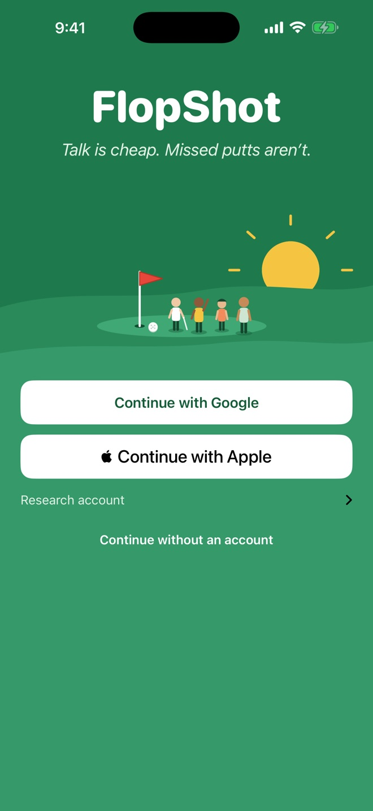
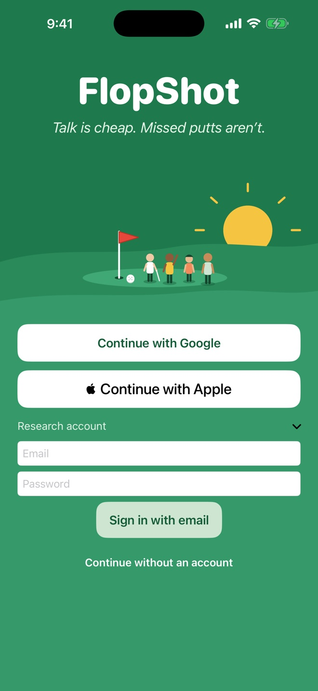
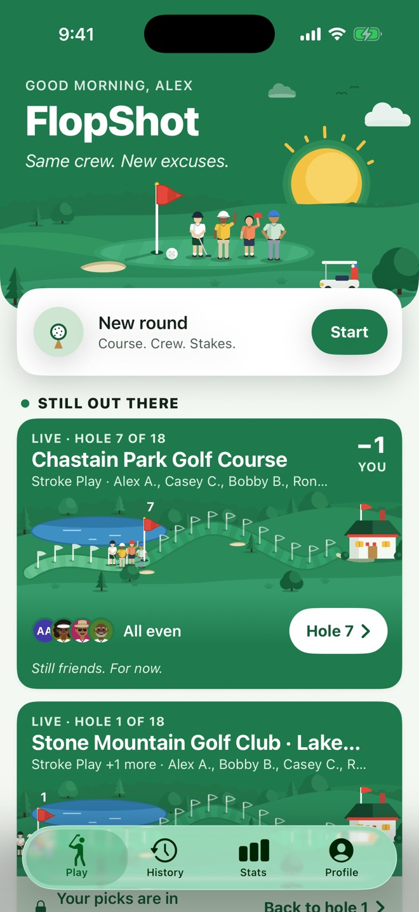

App Review guide
Thank you for reviewing FlopShot. A review account is ready for you, with friends, finished rounds, a round in progress and posts in the Friends Feed, so you can see every feature without setting anything up.
The email and password are in the Sign-In Information section of this build’s App Review details in App Store Connect. They are never shown on this page.
Sign in

1Open “Research account”
Open FlopShot. On the welcome screen, tap Research account, under the Apple button.
If you tapped Continue without an account earlier, go to the Profile tab and tap Sign in to get back to this screen.

2Enter the review account
Type the email and password from App Store Connect, then tap Sign in with email.

3You’re in
You land on Play Home: a round in progress, your last round, and the Friends Feed under Around the clubhouse.
Continue with Apple and Continue with Google also work, with your own account. A new account starts empty, though, so the review account is the quickest way to see everything.
Where to find things
Keeping score
On Play Home, open the round under Still out there to score a hole, or tap New round to start one. Finished rounds are in the History tab, and totals are in Stats. On a finished round’s summary, Fix a score corrects a mistake, and everyone in the round sees what changed.
Yardages and location
- On courses OpenStreetMap has mapped, Score Entry shows the yardage to the green, and tapping it opens the Hole Map.
- On a mapped hole, the yardage capsule offers See how far to the green › Turn on yardages, and only then does iOS ask for location While Using the App. Location is read only while a hole is on screen. Location is used on the phone only and is never saved or sent to our server (Privacy Policy). Saying no only hides the yardage; everything else works.
- Profile › Settings › During a round › Show yardages turns the feature off, for leagues that don’t allow distance devices.
Watching a round
Friends can watch a round live, without its money, and make their own picks before the first score. Invites show on Play Home; a friend’s tee-off post in the Feed has a Watch button. Finished watched rounds are in Profile › Rounds you watched.
Friends Feed (user-generated content, guideline 1.2)
- Scroll down Play Home to Around the clubhouse. Friends post a round with a short quip, as they tee off or when they finish, react, and reply. Hold a reaction to see who sent it.
- Tap the … button next to any quip or reply: Report…, Block, and Delete for your own posts.
- Slurs, hate and explicit sexual words are refused by the server in posts, replies, names and handles. Everyday swearing is hidden as “s***” unless the user turns on Profile › Settings › Feed › Allow s*** talk (off by default).
- Reports email us at once, and we act on them within 24 hours: we hide the content and can suspend the account. The rules are in the Terms of Use.
Money (guideline 5.3)
FlopShot is a scorekeeper. It records the friendly side games a group agrees on and shows who owes whom at the end. It never holds, sends or receives money, and has no in-app purchases. The optional Venmo button only opens the Venmo app.
Account and privacy
- Delete account: Profile › Settings › Account › Delete account (guideline 5.1.1(v)).
- Who sees your rounds and who can invite you: Profile › Settings › Privacy.
- Blocked accounts: Profile › Settings › Privacy › Blocked accounts.
- Notifications: FlopShot asks with its own card first, when an invite or friend request makes it useful, then iOS asks. Profile › Settings › Notifications has a switch for round invites and one for friend requests. Pushes never mention money.
- Help, feedback, Privacy Policy and Terms: Profile › Settings › Help & legal.
- Without an account: “Continue without an account” keeps score on the phone only.
About this build
This beta is connected to FlopShot’s test server, kept apart from the App Store version’s data. Other test accounts may add rounds and posts to the review account’s Feed between builds.
Questions
Email flopshot.support@gmail.com. We’ll reply as quickly as we can.